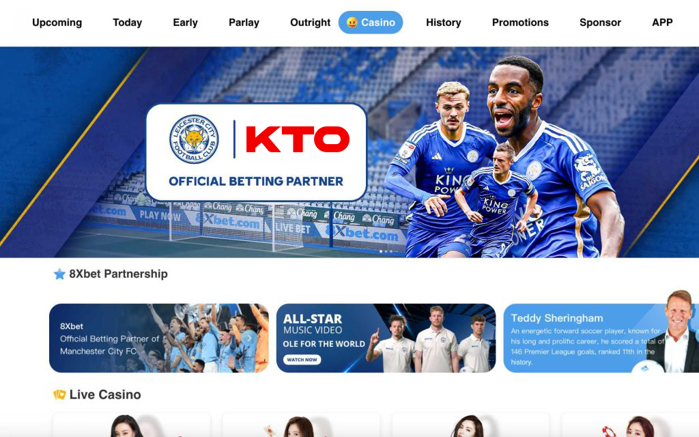

Kèo KTO: Nâng Cao Trải Nghiệm Cá Cược Trực Tuyến
Kèo KTO không chỉ là một khái niệm trong thế giới cá cược trực tuyến, mà còn là một chìa khóa mở ra những cơ hội và thách thức mới cho người chơi. KTO, nhà cái hàng đầu, mang đến cho người hâm mộ thể thao và giải trí một loạt các loại kèo đa dạng, từ những kèo phổ biến như Châu Á, Chấp, Tài/Xỉu đến những lựa chọn độc đáo như Cược Chẵn/Lẻ hay Tỉ Số Chính Xác.
Các Loại Kèo Phổ Biến
1. Kèo Châu Á (Asian Handicap)
Kèo Châu Á là một trong những loại kèo phổ biến nhất trên nhà cái KTO. Đây là hình thức cá cược thể thao mà đội yếu sẽ nhận được ưu điểm để tạo cơ hội cược cân bằng hơn. Người chơi có thể lựa chọn giữa đội thắng, thua, hoặc hòa, tùy thuộc vào kèo được đặt.
2. Kèo Chấp (Handicap)
Kèo Chấp liên quan đến việc đặt một giới hạn handicap cho đội mạnh hơn hoặc yếu hơn. Người chơi cược vào đội nào sẽ vượt qua giới hạn này để giành chiến thắng.
3. Kèo Tài/Xỉu (Over/Under)
Kèo Tài/Xỉu tập trung vào tổng số bàn thắng hoặc điểm trong một sự kiện thể thao. Người chơi có thể đặt cược liệu tổng số này sẽ lớn hơn (Tài) hay nhỏ hơn (Xỉu) mức cụ thể.

4. Kèo Tỉ Số Chính Xác (Correct Score)
Kèo Tỉ Số Chính Xác cho phép người chơi dự đoán kết quả chính xác của một trận đấu. Đây là một loại kèo có tỷ lệ cược cao, nhưng đồng thời mang lại những phần thưởng hấp dẫn nếu dự đoán đúng.
5. Kèo Cược Chẵn/Le (Odd/Even)
Kèo Cược Chẵn/Le liên quan đến tính chẵn hoặc lẻ của tổng số bàn thắng hoặc điểm. Người chơi có thể đặt cược vào tính chẵn hoặc lẻ của sự kiện để có cơ hội chiến thắng.
Tại Sao Chọn Kèo KTO?
1/ Đa Dạng và Phong Phú: KTO mang đến một loạt các loại kèo, từ những lựa chọn phổ biến cho đến những kèo độc đáo, đảm bảo người chơi có nhiều sự chọn lựa khi đặt cược.
2/ Tỉ Lệ Cược Hấp Dẫn: KTO cam kết cung cấp tỷ lệ cược cạnh tranh, tối ưu hóa giá trị từ mỗi kèo và tạo điều kiện thuận lợi cho người chơi.
3/ Sự An Toàn và Tin Cậy: Với uy tín lâu năm, KTO mang đến sự tin cậy và an toàn cho người chơi khi tham gia các hoạt động cá cược.
4/ Chương Trình Khuyến Mãi Đặc Biệt: Kèo nhà cái KTOthường đi kèm với các chương trình khuyến mãi và ưu đãi đặc biệt, tăng thêm giá trị cho mỗi cược.
5/ Trải Nghiệm Di Động Thuận Lợi: KTO không chỉ cung cấp kèo trên trang web mà còn qua ứng dụng di động, mang lại sự thuận tiện và linh hoạt cho người chơi khi đặt cược từ mọi nơi.
Câu hỏi thường gặp
Làm thế nào để đọc tỷ lệ kèo Châu Á trên trang web KTO?
Trả lời: Trên trang web KTO, tỷ lệ kèo Châu Á thường được hiển thị dưới dạng số có hoặc không dấu cộng (+) hoặc trừ (-). Số này thể hiện giới handicap cho đội yếu, và bạn có thể tính toán tỷ lệ cược của mình bằng cách sử dụng số liệu này.
Tại sao kèo Tài/Xỉu trên KTO có thể thay đổi trong quá trình trận đấu?
Trả lời: Kèo Tài/Xỉu thay đổi do các yếu tố như sự kiện thực tế trong trận đấu, thay đổi tâm lý đội hình, và thông tin thương vụ. KTO liên tục cập nhật kèo để phản ánh sự thay đổi này và đưa ra các cơ hội cá cược mới.
Làm thế nào để chọn lựa giữa kèo Chấp và kèo Tài/Xỉu trên KTO?
Trả lời: Quyết định giữa kèo Chấp và Tài/Xỉu phụ thuộc vào sự hiểu biết về đội bóng, cùng với các yếu tố như thói quen ghi bàn, phòng thủ, và sự đối đầu giữa hai đội. Nghiên cứu kỹ lưỡng và theo dõi thông tin là chìa khóa để đưa ra quyết định thông minh.
Có cách nào để kiểm tra lịch sử cược và kết quả trước đó trên KTO không?
Trả lời: Bạn có thể kiểm tra lịch sử cược và kết quả trước đó trên KTO bằng cách đăng nhập vào tài khoản cá cược của mình và truy cập mục Lịch Sử Cược. Đây là nơi bạn có thể theo dõi và quản lý tất cả các cược đã đặt.
Làm thế nào để theo dõi các thông báo về khuyến mãi và ưu đãi mới từ KTO?
Trả lời: Để theo dõi thông báo về khuyến mãi và ưu đãi mới từ KTO, bạn nên đăng ký nhận thông báo qua ứng dụng di động hoặc cài đặt thông báo trên trang web. KTO thường gửi thông báo qua email hoặc tin nhắn để thông báo về các chương trình khuyến mãi đặc biệt.
Làm thế nào để xử lý khi gặp vấn đề kỹ thuật hoặc cần hỗ trợ từ đội ngũ của KTO?
Trả lời: Nếu bạn gặp vấn đề kỹ thuật hoặc cần hỗ trợ, bạn có thể liên hệ với đội ngũ hỗ trợ của KTO thông qua phần Trợ Giúp trên trang web hoặc ứng dụng di động. Bạn cũng có thể sử dụng các phương tiện liên lạc khác như email hoặc chat trực tuyến để nhận được sự hỗ trợ nhanh chóng và chuyên nghiệp.
Kết Luận
Kèo KTO không chỉ là con số trên tỷ lệ cược mà còn là cơ hội để người chơi khám phá và thể hiện chiến lược cá cược của mình. Với đội ngũ chuyên gia và sự đa dạng của các loại kèo, KTO không chỉ là nơi cá cược, mà còn là điểm đến của những trải nghiệm độc đáo và thú vị trong thế giới giải trí trực tuyến.
Người chơi có thể tận hưởng không gian cá cược đầy thách thức và niềm hứng khởi của Kèo KTO, mở ra cánh cửa cho những cơ hội mới và giúp họ trải nghiệm sự hấp dẫn của thế giới cá cược trực tuyến. Hãy cùng nhau chìm đắm vào những trận đấu hấp dẫn và thưởng thức niềm vui của việc dự đoán kết quả cùng KTO ngay hôm nay!